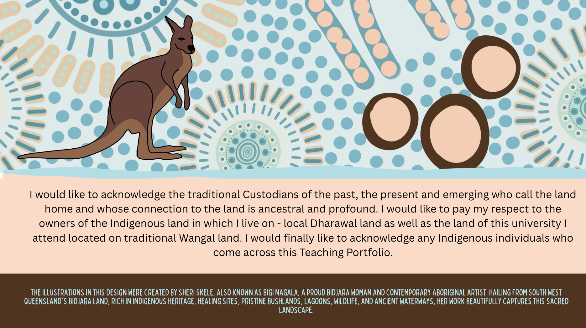

Acknowledgement of Country 🪃
Resonance of Country: A Musical Reflection on Indigenous Stories
This track is included to reflect contemporary Indigenous voices and perspectives, complementing the Acknowledgement of Country. Including this contemporary musical element reflects my commitment to embedding cultural awareness and diverse perspectives in my teaching.
I am a passionate and student-focused educator, committed to creating inclusive and engaging learning experiences. My teaching blends curriculum alignment with practical application, encouraging students to connect theory with real-world contexts.
I value creativity, critical thinking, and cultural responsiveness, and I bring these to life by designing hands-on, collaborative projects that challenge students to explore, analyse, and create meaningful solutions rooted in real-world and culturally inclusive contexts.
My Teaching Philosophy
My teaching philosophy is shaped by making sense of chaos.
Working in practical and fast-paced environments such as Food Technology kitchens and Industrial workshops has taught me that learning thrives in dynamic, hands-on settings where adaptability and problem-solving are essential.
I believe that structured guidance within these busy spaces provides students with the confidence to take creative risks, develop resilience, and build real-world skills that so many contemporary individuals are missing.
By embracing the organised chaos of practical learning, I aim to create an engaging, supportive environment where students can transform challenges into opportunities for growth.